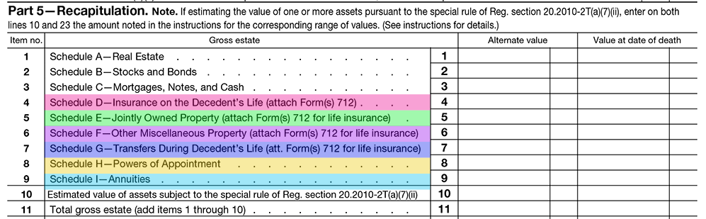

Here is the section of Form 706 where the gross estate is calculated. Some of the items are self-explanatory; others are not. To establish a foundation for understanding the estate planning process, it is important that you have some understanding of each of these items. Click each of the highlighted sections for more information on those items that are not readily apparent:
